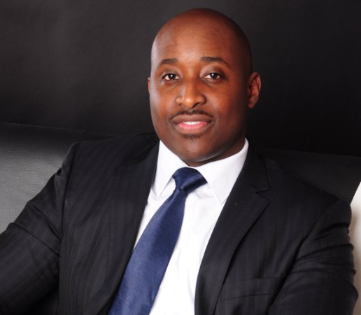

| "> |
Christianson JohnQuality Engineering Manager Currently Lead Reliability Engineer, Chartered Electrical and Controls systems engineer with Management experience. AutoCAD Electrical, PLCs, and safety systems with regards to IEC61508. Robotics and Automation design. Accustomed to working under stressful conditions and maintaining accurate documentation records. Visual Basic .Net and C# programming experience. Prince2 project management certified. Hands Electrical panel design experience along commissioning and root cause analysisskills. STEM Ambassador engaged with helping children in the engineering community. |
| Dates | Work |
|---|---|
| 2002 – 2006 | University of Leeds |